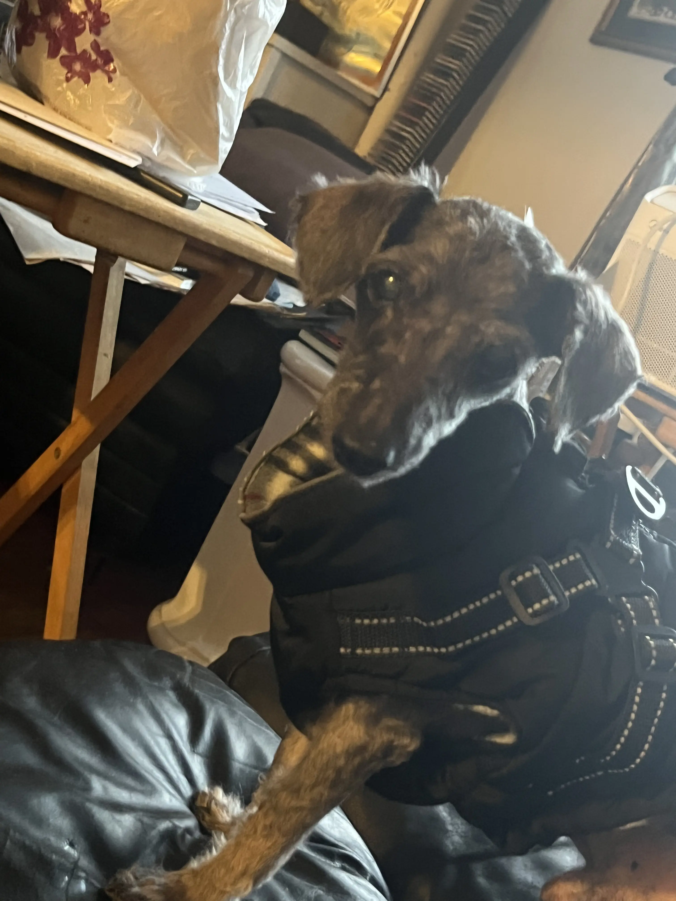
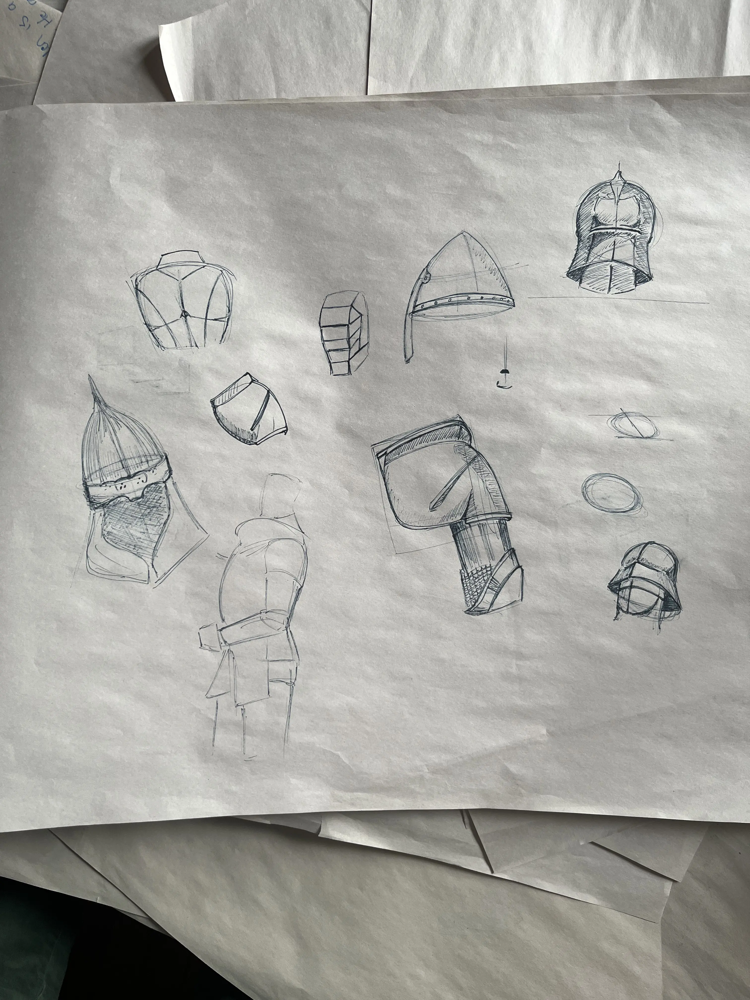
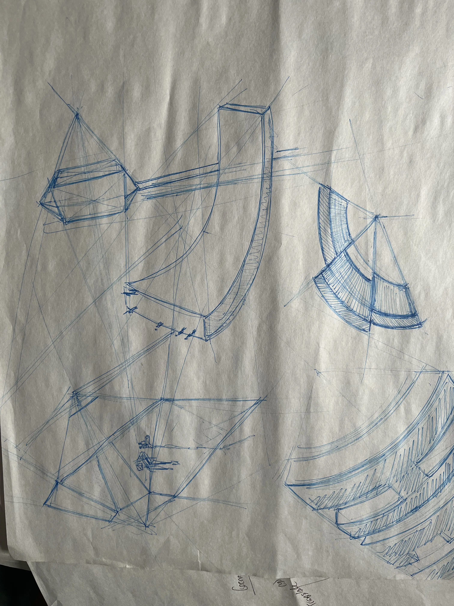
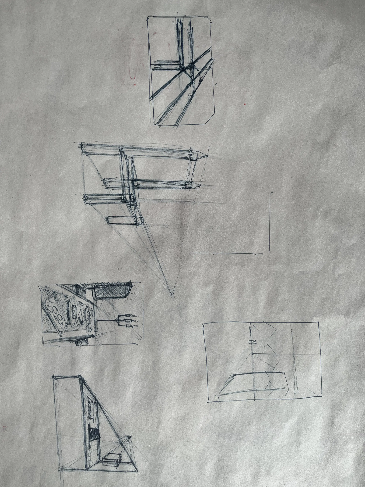

About Me
"The best designs are invisible—they work so well you don't even notice them. That's what I strive for: solutions so intuitive they feel inevitable."
From Engineering to Design
Building the Framework
My journey began in mechanical engineering, where I learned to approach problems systematically, test solutions, and iterate based on data. This structured thinking became the foundation for my design approach.
Finding My Direction
Frustration with poorly designed interfaces made me think, "Maybe, I could make this better for others." I discovered that design offered what engineering sometimes couldn't: the freedom to balance technical constraints with human needs and creative expression.
Developing the Skills
This realization led me to pursue formal UX training through Columbia Engineering's bootcamp, where I built a strong foundation in user-centered design principles and gained valuable project experience.
Bringing It All Together
Now I approach design challenges much like engineering problems—starting with a solid structure and working toward the details—but with the flexibility to pivot when research reveals new insights. I'm passionate about creating accessible, intuitive experiences that solve real problems.
Core Competencies
Design & Research
- User Research & Testing
- Information Architecture
- Accessibility-Focused Design
- Figma & Adobe Creative Suite
- Design Systems Implementation
Development & Interactive
- Front-End Development (HTML/CSS/JS)
- Three.js & WebGL
- 3D Web Experiences
- Responsive Design
- Animation & Interactive Prototypes
Beyond Design

Meet my Consultant
This is Lucky, a 17-year-old toy poodle. He's been by my side providing sage advice and a constant source of joy.
When I'm not designing, you'll find me sketching, painting watercolor or coding (I designed and built this website from scratch!).
A glimpse into my sketchbook
I love using 18' x 24' newsprint paper to practice drawing & getting ideas out. I feel free to make mistakes and experiment with different, weird ideas. Sometimes I'll even experiment creating UI components on newsprint before transferring them to Figma.


